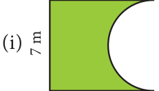
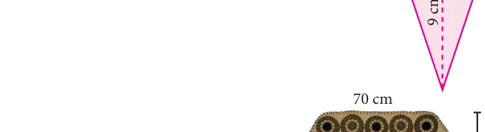

- Find the perimeter and area of the figures given below. p \(= \frac{22}{7}\)


Find the area of the shaded part in the following figures. (p \(= 3 14\). )
Find the area of the combined figure given which is got by the joining of two parallelograms.
- of diameter 6 cm with a triangle of base 6

- The door mat which is hexagonal in shape has the following measures as given in the figure. Find its area.
- A rocket drawing has the measures as given in the figure. Find its area.
- Find the area of the irregular polygon shaped fields given below.